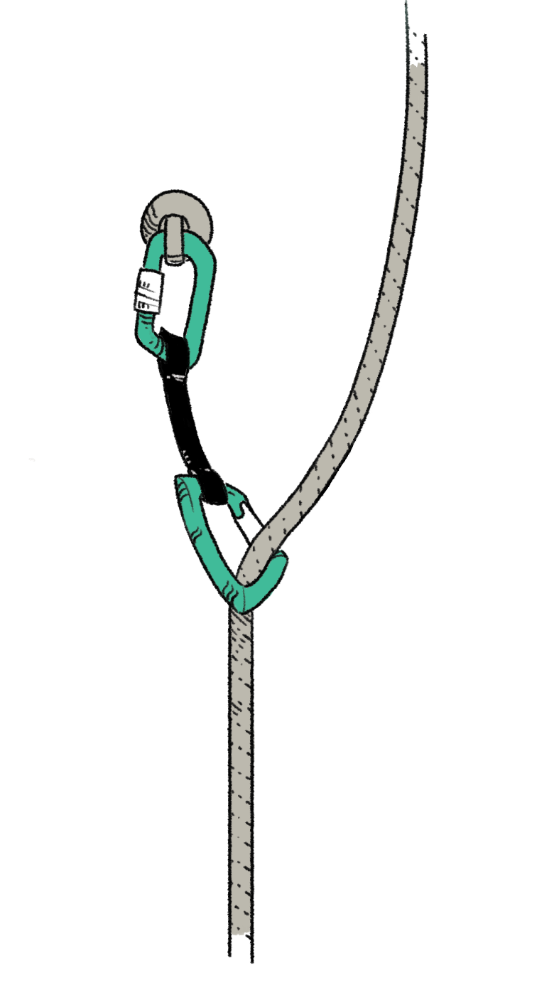

L'architecture multimodale
Le Mur d'EscaladeConstruisez votre parcours comme un mur d'escalade : chaque modalité est une prise, à choisir et placer pour offrir une progression fluide.
- 1 Vissez les prises (vos modalités) sur le mur
- 2 Testez la voie (votre parcours) dans la peau de l'apprenant
- 3 Co-construisez : comparez, débattez, votez
Une architecture multimodale claire et validée collectivement.